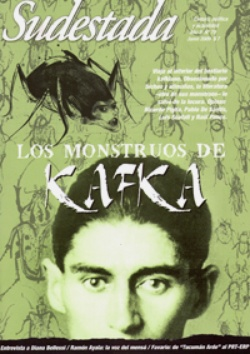

Buscar
Los monstruos de Franz Kafka
Como una alimaña encerrada en su propia fortaleza, Kafka se obsesionó con sus monstruos internos, acaso víctimas retorcidas del horror capitalista en pleno auge. Pero la literatura, su otra obsesión, lo salvó de la locura. Así convirtió esos monstruos en los personajes más increíbles de la literatura moderna. A continuación, la metamorfosis de un escritor [¡político!] en un desfile de bestias profanas. Opinan los escritores Ricardo Piglia, Pablo De Santis y los ilustradores Luis Scafati y Raúl Ponce.
Edición N° 79
Junio 2009
Revista bimensual
Comprar edición impresaSumario
- Los monstruos de Franz Kafka
- Un desalojo silencioso
- Entrevista con Diana Bellessi
- Eduardo Favario: de Tucumán Arde al PRT-ERP
- Ramón Ayala: la voz del mensú
- "Ausencias", de Gustavo Germano
Compartir Articulo
Al fin, la espera terminaba, la tuberculosis ("un reflejo de mi bancarrota espiritual") le había anticipado la muerte. En la calle, el perro alcanzaba por fin su propia cola. El Dr. de la familia, ya viejo pero no menos preciso, recuperaba su maletín de cuero que había extraviado en medio de una habitación repleta de libros y papeles.
-Bueno, estimado Franz, qué más puedo decirle.
-No se preocupe por mí.
Ni bien salió por la puerta, Kafka se relamió mientras arrancaba una hoja de su cuaderno para escribirle a su amigo Max Brod:
"Quizá ya esta vez no me levante. Después de este mes de fiebre pulmonar es muy probable que sobrevenga una inflamación seria de los pulmones; por más que lo escriba, ello no podrá evitarla, aunque sin embargo pueda ejercer cierta influencia. Todo lo que se encuentre al morir yo (en cajones de libros, en armarios, en el escritorio, ya sea en mi casa o en la oficina o en cualquier otro lugar en que se te ocurra que pudiera haber papeles), me refiero a diarios, manuscritos, cartas, ya sean ajenas o propias, esbozos y toda cosa de este género, debe ser quemado sin leerse".
¿Por qué habría hecho semejante pedido a su amigo y mayor admirador? La vez que se le ocurrió, éste le había contestado: "Si me encargas seriamente eso, te digo desde ahora que no cumpliré tu ruego." Por supuesto que Max Brod no sólo nunca destruyó sus escritos sino que incluso dedicó el resto de su vida a reconstruir su obra, tal vez la más intrigante y a la vez más fragmentada del siglo XX. Alguien dijo una vez que esa carta fue la última novela de Kafka. Al final de tanta espera, en las últimas páginas de su extenso relato de ficción-realidad, no podía hacer más que retirarse a la manera de Kafka.
El habitante de la cueva
La mente de Kafka se formó en un espacio muy particular, uno de los guetos más lúgubres, en una de las ciudades más neurálgicas de Europa, la famosa Praga, un crisol de lenguas y nacionalidades, en ese momento en manos del imperio de los Habsburgo y más tarde recuperada por los nacionalistas checos. Sin embargo, Praga era para él "una pequeña madre con garras que lo sofocaba". Su barrio, conocido como Josefov, era un verdadero laberinto de calles y pasadizos, donde las casas de belleza barroca se burlaban de los caseríos pobres infestados de ratas. Un gueto cerrado y misterioso, repleto de leyendas, la mayoría provenientes de la cultura judía. Así es, Kafka era judío, aunque haya renegado de ello, aunque su lengua haya sido el alemán. ¿Cuál era entonces la identidad de Kafka? No era ni checo, ni judío, ni alemán. Kafka fue un extraño toda su vida.
Como un perro vagabundo, buscaba en los callejones las respuestas a su vacío cultural y religioso. Así dio en su juventud con el jasadismo, un movimiento místico para el cual "la realidad terrenal formaba un continuo con la realidad sobrenatural".
Pero el espacio más formador para el animal literario en que se transformó Kafka fue su propia casa, un ambiente pequeño donde debía convivir con sus padres y sus tres hermanas. Cuando regresaba de su empleo en la Compañía de Seguros de Accidentes de Trabajo en Praga (en el que pudo reducir la tasa de accidentes en las industrias de Bohemia) se recogía en su habitación para escribir todo lo que había elucubrado durante el día.
"Estoy sentado en mi habitación, que es el cuartel general del ruido de toda la casa. Oigo golpear todas las puertas; con su estrépito, sólo me libro de oír los pasos de quienes corren entre ellas; oigo incluso el golpe de la puerta del horno de la cocina. (…) El padre ha salido, y ahora se inicia el sonido más suave, más disperso, más desesperante, presidido por las voces de dos canarios. Ya lo había pensado antes, pero, al oír los cantos de los canarios, se me vuelve a ocurrir que podría abrir la puerta dejando únicamente una pequeña rendija, arrastrarme como una serpiente a la habitación de al lado y así, desde el suelo, pedirles a mis hermanas y a su institutriz que se callen."[1]
Allí pasó la mayor parte de su vida, tratando de escribir en medio de constantes interrupciones y distracciones. La interrupción es un elemento importante en la obra de Kafka. Dos de sus grandes obras, La madriguera y El castillo, no tienen un cierre, sino que quedan flotando en una frase sin terminar. Ricardo Piglia, en su magnífico ensayo del sujeto lector, lo reafirma: "La interrupción, gran tema de Kafka, la interferencia que impide llegar a destino. La suspensión, el desvío, la postergación: esto es clásico en él, lo narra siempre, pero define también el registro de su escritura. Su estilo es un arte de la interrupción, el arte de narrar la interferencia."[2]...
(La nota completa en la edición gráfica de Sudestada Nº79 - junio 2009)
Comentarios
Martín Azcurra
Articulos más vistos


LIBRERÍA SUDESTADA

Colección infantil

Distribuidora de Libros

Suscripción

Sudestada en URUGUAY

Otros articulos de esta edición
Ramón Ayala: la voz del mensú
Es la voz de hacheros, mensúes y tareferos. Poeta rebelde de los olvidados, Ramón Ayala dispersa sus melodías más allá ...
"Ausencias", de Gustavo Germano
Al mostrar la simpleza de lo cotidiano, el fotógrafo entrerriano Gustavo Germano logró exponer en 15 pares de fotos de ...
Eduardo Favario: de Tucumán Arde al PRT-ERP
Fue uno de los fundadores del Grupo de Artistas de Vanguardia de Rosario. Desde allí, impulsó una profunda ruptura en ...
Entrevista con Diana Bellessi
La reciente publicación de su poesía completa en Tener lo que se tiene resulta una excusa inmejorable para adentrarse en ...
Un desalojo silencioso
La bruma de la mañana envuelve el andar lento del tren sobre las vías. A ninguno de los pasajeros le ...